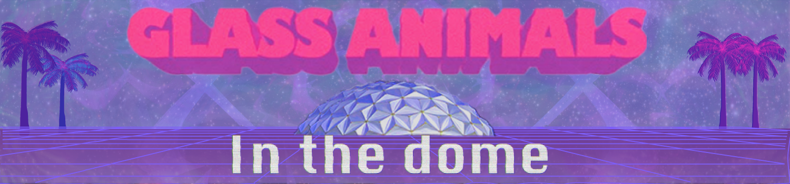

Liquid Sky
Fiske Planetarium Liquid Sky Show Marketing: Tame Impala
flkd;lfkjd;kjfasz;lf

Fiske Planetarium Liquid Sky Show Marketing: Glass Animals
flkd;lfkjd;kjfasz;lf

Soledad y el Mar Cover || Recording in Logic Pro | Editing in Photoshop | Shot on DSLR | (2022)
This video was recorded for a Latin American Music Class. All percussive instruments were re-recorded using midi piano into Logic. All vocals, background vocals, and guitars were recorded through the macbook mic into Logic. Filming involved lip-syncing and using a DSLR to film. All editing and subtitles were put together through the Photoshop video timeline feature.
This song encompasses the feeling of being lonliness and yearning through the Bolero, a style of music from Cuba that was popularized in other countries including Mexico.